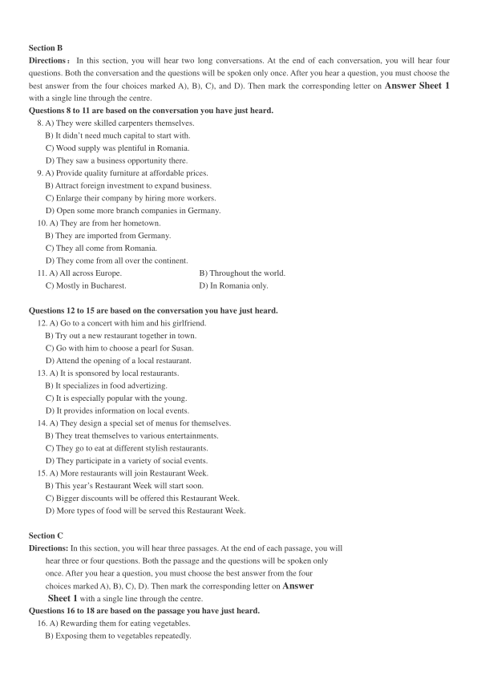
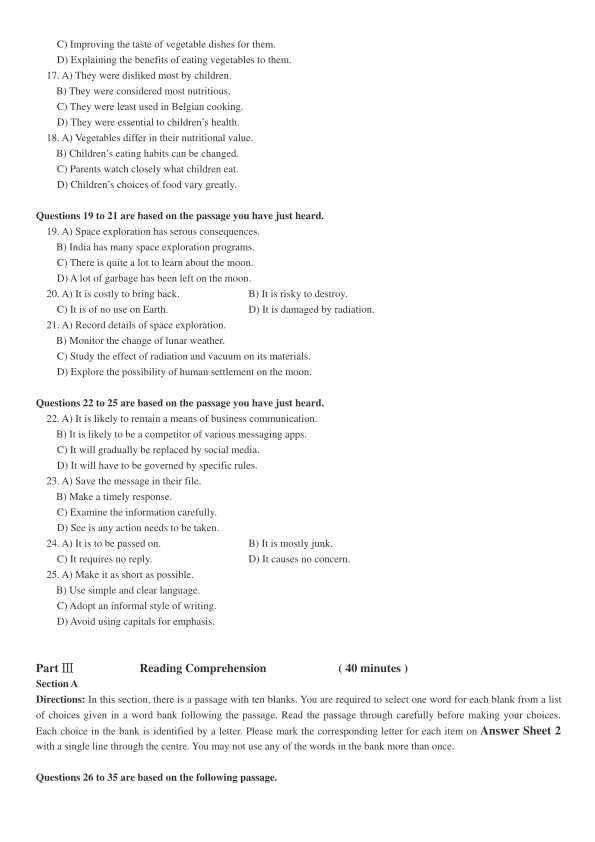
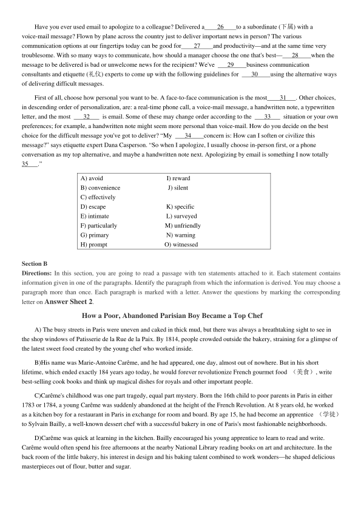
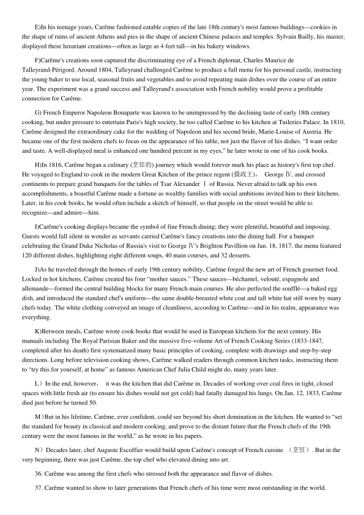
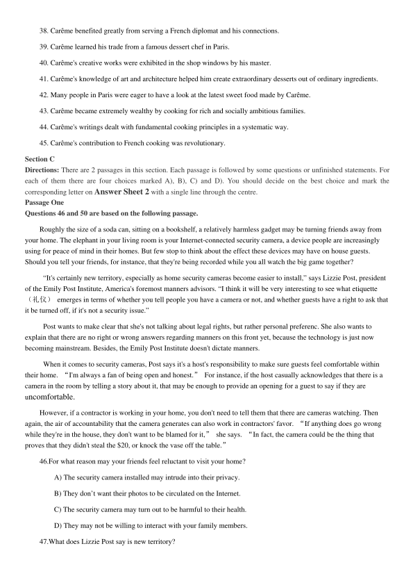
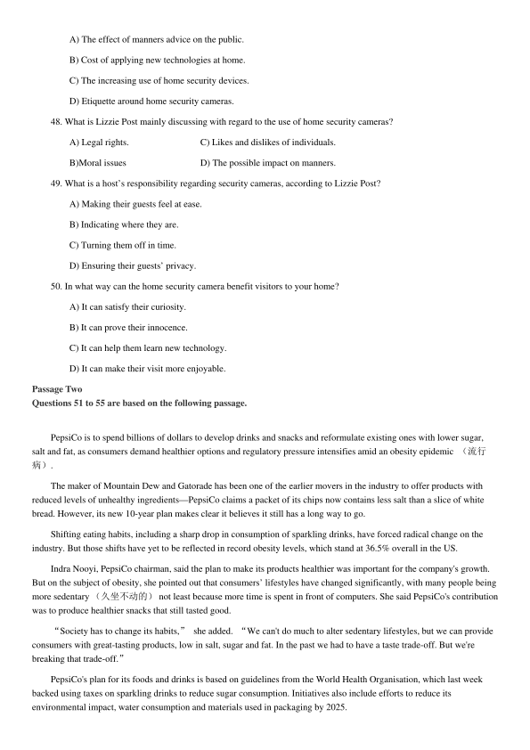
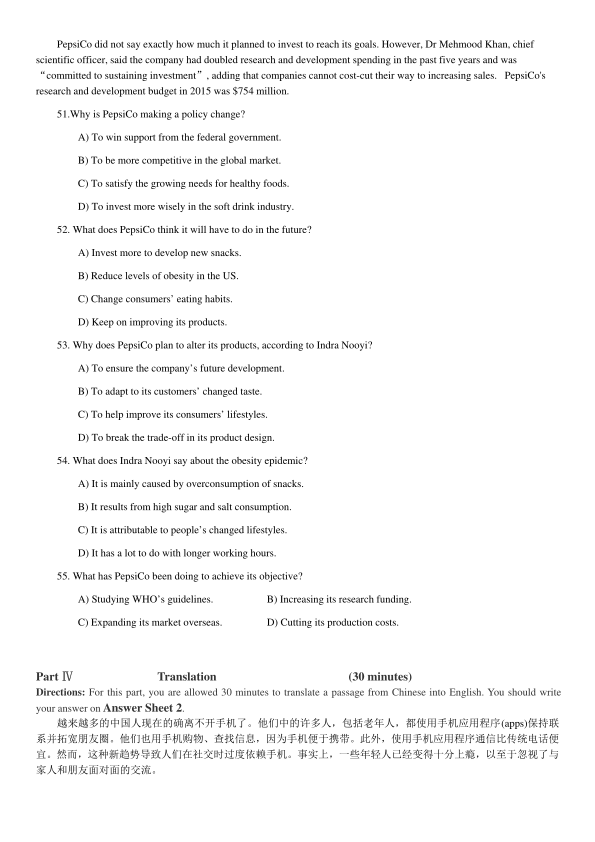

第 1 / 8 页

2018 年12 月大学英语四级考试真题（第2 套）
Part I
Writing
(30minutes)
Directions: For this part, you are allowed 30 minutes to write a short essay on the challenges of studying abroad. You
should write at least120 words but no more than 180 words.
___________________________________________________________________________________________________
___________________________________________________________________________________________________
___________________________________________________________________________________________________
Part II
Listening Comprehension
(25 minutes)
Section A
Directions: In this section, you will hear three news reports. At the end of each news report, you will hear two or three
questions. Both the news report and the questions will be spoken only once. After you hear a question, you must choose the
best answer from the four choices marked A), B), C) and D). Then mark the corresponding letter on Answer Sheet 1 with
a single line through the centre.
Questions 1 and 2 are based on the news report you have just heard.
1. A) A man was pulled to safety after a building collapse.
B) A beam about ten feet long collapsed to the ground.
C) A rescue worker got trapped in the basement.
D) A deserted 100-year-old building caught fire.
2. A) He suffered a fatal injury in an accident.
B) He once served in a fire department.
C) He was collecting building materials.
D) He moved into his neighbor’s old house.
Questions 3 and 4 are based on the news report you have just heard.
3. A) Improve the maths skills of high school teachers.
B) Change British people’s negative view of maths.
C) Help British people understand their paychecks.
D) Launch a campaign to promote maths teaching.
4. A) Children take maths courses at an earlier age.
B) The public sees the value of maths in their life.
C) British people know how to do elementary calculations.
D) Primary school teachers understand basic maths concepts.
Questions 5 to 7 are based on the news report you have just heard.
5. A) He owns a fleet of aircraft.
B) He is learning to be a pilot.
C) He regards his royal duties as a burden.
D) He held a part-time job for over 20 years.
6. A) He can demonstrate his superior piloting skills.
B) He can change his focus of attention and relax.
C) He can show his difference from other royalty.
D) He can come into closer contact with his people.
7. A) They enjoyed his company.
B) They liked him in his uniform.
C) They rarely recognised him.
D) They were surprised to see him.
查看 / 复制本页文字
2018 年12 月大学英语四级考试真题（第2 套） Part I Writing (30minutes) Directions: For this part, you are allowed 30 minutes to write a short essay on the challenges of studying abroad. You should write at least120 words but no more than 180 words. ___________________________________________________________________________________________________ ___________________________________________________________________________________________________ ___________________________________________________________________________________________________ Part II Listening Comprehension (25 minutes) Section A Directions: In this section, you will hear three news reports. At the end of each news report, you will hear two or three questions. Both the news report and the questions will be spoken only once. After you hear a question, you must choose the best answer from the four choices marked A), B), C) and D). Then mark the corresponding letter on Answer Sheet 1 with a single line through the centre. Questions 1 and 2 are based on the news report you have just heard. 1. A) A man was pulled to safety after a building collapse. B) A beam about ten feet long collapsed to the ground. C) A rescue worker got trapped in the basement. D) A deserted 100-year-old building caught fire. 2. A) He suffered a fatal injury in an accident. B) He once served in a fire department. C) He was collecting building materials. D) He moved into his neighbor’s old house. Questions 3 and 4 are based on the news report you have just heard. 3. A) Improve the maths skills of high school teachers. B) Change British people’s negative view of maths. C) Help British people understand their paychecks. D) Launch a campaign to promote maths teaching. 4. A) Children take maths courses at an earlier age. B) The public sees the value of maths in their life. C) British people know how to do elementary calculations. D) Primary school teachers understand basic maths concepts. Questions 5 to 7 are based on the news report you have just heard. 5. A) He owns a fleet of aircraft. B) He is learning to be a pilot. C) He regards his royal duties as a burden. D) He held a part-time job for over 20 years. 6. A) He can demonstrate his superior piloting skills. B) He can change his focus of attention and relax. C) He can show his difference from other royalty. D) He can come into closer contact with his people. 7. A) They enjoyed his company. B) They liked him in his uniform. C) They rarely recognised him. D) They were surprised to see him.
第 2 / 8 页

Section B
Directions：In this section, you will hear two long conversations. At the end of each conversation, you will hear four
questions. Both the conversation and the questions will be spoken only once. After you hear a question, you must choose the
best answer from the four choices marked A), B), C), and D). Then mark the corresponding letter on Answer Sheet 1
with a single line through the centre.
Questions 8 to 11 are based on the conversation you have just heard.
8. A) They were skilled carpenters themselves.
B) It didn’t need much capital to start with.
C) Wood supply was plentiful in Romania.
D) They saw a business opportunity there.
9. A) Provide quality furniture at affordable prices.
B) Attract foreign investment to expand business.
C) Enlarge their company by hiring more workers.
D) Open some more branch companies in Germany.
10. A) They are from her hometown.
B) They are imported from Germany.
C) They all come from Romania.
D) They come from all over the continent.
11. A) All across Europe.
B) Throughout the world.
C) Mostly in Bucharest.
D) In Romania only.
Questions 12 to 15 are based on the conversation you have just heard.
12. A) Go to a concert with him and his girlfriend.
B) Try out a new restaurant together in town.
C) Go with him to choose a pearl for Susan.
D) Attend the opening of a local restaurant.
13. A) It is sponsored by local restaurants.
B) It specializes in food advertizing.
C) It is especially popular with the young.
D) It provides information on local events.
14. A) They design a special set of menus for themselves.
B) They treat themselves to various entertainments.
C) They go to eat at different stylish restaurants.
D) They participate in a variety of social events.
15. A) More restaurants will join Restaurant Week.
B) This year’s Restaurant Week will start soon.
C) Bigger discounts will be offered this Restaurant Week.
D) More types of food will be served this Restaurant Week.
Section C
Directions: In this section, you will hear three passages. At the end of each passage, you will
hear three or four questions. Both the passage and the questions will be spoken only
once. After you hear a question, you must choose the best answer from the four
choices marked A), B), C), D). Then mark the corresponding letter on Answer
Sheet 1 with a single line through the centre.
Questions 16 to 18 are based on the passage you have just heard.
16. A) Rewarding them for eating vegetables.
B) Exposing them to vegetables repeatedly.
查看 / 复制本页文字
Section B Directions：In this section, you will hear two long conversations. At the end of each conversation, you will hear four questions. Both the conversation and the questions will be spoken only once. After you hear a question, you must choose the best answer from the four choices marked A), B), C), and D). Then mark the corresponding letter on Answer Sheet 1 with a single line through the centre. Questions 8 to 11 are based on the conversation you have just heard. 8. A) They were skilled carpenters themselves. B) It didn’t need much capital to start with. C) Wood supply was plentiful in Romania. D) They saw a business opportunity there. 9. A) Provide quality furniture at affordable prices. B) Attract foreign investment to expand business. C) Enlarge their company by hiring more workers. D) Open some more branch companies in Germany. 10. A) They are from her hometown. B) They are imported from Germany. C) They all come from Romania. D) They come from all over the continent. 11. A) All across Europe. B) Throughout the world. C) Mostly in Bucharest. D) In Romania only. Questions 12 to 15 are based on the conversation you have just heard. 12. A) Go to a concert with him and his girlfriend. B) Try out a new restaurant together in town. C) Go with him to choose a pearl for Susan. D) Attend the opening of a local restaurant. 13. A) It is sponsored by local restaurants. B) It specializes in food advertizing. C) It is especially popular with the young. D) It provides information on local events. 14. A) They design a special set of menus for themselves. B) They treat themselves to various entertainments. C) They go to eat at different stylish restaurants. D) They participate in a variety of social events. 15. A) More restaurants will join Restaurant Week. B) This year’s Restaurant Week will start soon. C) Bigger discounts will be offered this Restaurant Week. D) More types of food will be served this Restaurant Week. Section C Directions: In this section, you will hear three passages. At the end of each passage, you will hear three or four questions. Both the passage and the questions will be spoken only once. After you hear a question, you must choose the best answer from the four choices marked A), B), C), D). Then mark the corresponding letter on Answer Sheet 1 with a single line through the centre. Questions 16 to 18 are based on the passage you have just heard. 16. A) Rewarding them for eating vegetables. B) Exposing them to vegetables repeatedly.
第 3 / 8 页

C) Improving the taste of vegetable dishes for them.
D) Explaining the benefits of eating vegetables to them.
17. A) They were disliked most by children.
B) They were considered most nutritious.
C) They were least used in Belgian cooking.
D) They were essential to children’s health.
18. A) Vegetables differ in their nutritional value.
B) Children’s eating habits can be changed.
C) Parents watch closely what children eat.
D) Children’s choices of food vary greatly.
Questions 19 to 21 are based on the passage you have just heard.
19. A) Space exploration has serous consequences.
B) India has many space exploration programs.
C) There is quite a lot to learn about the moon.
D) A lot of garbage has been left on the moon.
20. A) It is costly to bring back.
B) It is risky to destroy.
C) It is of no use on Earth.
D) It is damaged by radiation.
21. A) Record details of space exploration.
B) Monitor the change of lunar weather.
C) Study the effect of radiation and vacuum on its materials.
D) Explore the possibility of human settlement on the moon.
Questions 22 to 25 are based on the passage you have just heard.
22. A) It is likely to remain a means of business communication.
B) It is likely to be a competitor of various messaging apps.
C) It will gradually be replaced by social media.
D) It will have to be governed by specific rules.
23. A) Save the message in their file.
B) Make a timely response.
C) Examine the information carefully.
D) See is any action needs to be taken.
24. A) It is to be passed on.
B) It is mostly junk.
C) It requires no reply.
D) It causes no concern.
25. A) Make it as short as possible.
B) Use simple and clear language.
C) Adopt an informal style of writing.
D) Avoid using capitals for emphasis.
Part Ⅲ
Reading Comprehension
( 40 minutes )
Section A
Directions: In this section, there is a passage with ten blanks. You are required to select one word for each blank from a list
of choices given in a word bank following the passage. Read the passage through carefully before making your choices.
Each choice in the bank is identified by a letter. Please mark the corresponding letter for each item on Answer Sheet 2
with a single line through the centre. You may not use any of the words in the bank more than once.
Questions 26 to 35 are based on the following passage.
查看 / 复制本页文字
C) Improving the taste of vegetable dishes for them. D) Explaining the benefits of eating vegetables to them. 17. A) They were disliked most by children. B) They were considered most nutritious. C) They were least used in Belgian cooking. D) They were essential to children’s health. 18. A) Vegetables differ in their nutritional value. B) Children’s eating habits can be changed. C) Parents watch closely what children eat. D) Children’s choices of food vary greatly. Questions 19 to 21 are based on the passage you have just heard. 19. A) Space exploration has serous consequences. B) India has many space exploration programs. C) There is quite a lot to learn about the moon. D) A lot of garbage has been left on the moon. 20. A) It is costly to bring back. B) It is risky to destroy. C) It is of no use on Earth. D) It is damaged by radiation. 21. A) Record details of space exploration. B) Monitor the change of lunar weather. C) Study the effect of radiation and vacuum on its materials. D) Explore the possibility of human settlement on the moon. Questions 22 to 25 are based on the passage you have just heard. 22. A) It is likely to remain a means of business communication. B) It is likely to be a competitor of various messaging apps. C) It will gradually be replaced by social media. D) It will have to be governed by specific rules. 23. A) Save the message in their file. B) Make a timely response. C) Examine the information carefully. D) See is any action needs to be taken. 24. A) It is to be passed on. B) It is mostly junk. C) It requires no reply. D) It causes no concern. 25. A) Make it as short as possible. B) Use simple and clear language. C) Adopt an informal style of writing. D) Avoid using capitals for emphasis. Part Ⅲ Reading Comprehension ( 40 minutes ) Section A Directions: In this section, there is a passage with ten blanks. You are required to select one word for each blank from a list of choices given in a word bank following the passage. Read the passage through carefully before making your choices. Each choice in the bank is identified by a letter. Please mark the corresponding letter for each item on Answer Sheet 2 with a single line through the centre. You may not use any of the words in the bank more than once. Questions 26 to 35 are based on the following passage.
第 4 / 8 页

Have you ever used email to apologize to a colleague? Delivered a
26
to a subordinate (下属) with a
voice-mail message? Flown by plane across the country just to deliver important news in person? The various
communication options at our fingertips today can be good for
27
and productivity—and at the same time very
troublesome. With so many ways to communicate, how should a manager choose the one that's best—
28
when the
message to be delivered is bad or unwelcome news for the recipient? We've
29
business communication
consultants and etiquette (礼仪) experts to come up with the following guidelines for
30
using the alternative ways
of delivering difficult messages.
First of all, choose how personal you want to be. A face-to-face communication is the most
31
. Other choices,
in descending order of personalization, are: a real-time phone call, a voice-mail message, a handwritten note, a typewritten
letter, and the most
32
is email. Some of these may change order according to the
33
situation or your own
preferences; for example, a handwritten note might seem more personal than voice-mail. How do you decide on the best
choice for the difficult message you've got to deliver? “My
34
concern is: How can I soften or civilize this
message?” says etiquette expert Dana Casperson. “So when I apologize, I usually choose in-person first, or a phone
conversation as my top alternative, and maybe a handwritten note next. Apologizing by email is something I now totally
35
.”
A) avoid
I) reward
B) convenience
J) silent
C) effectively
D) escape
K) specific
E) intimate
L) surveyed
F) particularly
M) unfriendly
G) primary
N) warning
H) prompt
O) witnessed
Section B
Directions: In this section, you are going to read a passage with ten statements attached to it. Each statement contains
information given in one of the paragraphs. Identify the paragraph from which the information is derived. You may choose a
paragraph more than once. Each paragraph is marked with a letter. Answer the questions by marking the corresponding
letter on Answer Sheet 2.
How a Poor, Abandoned Parisian Boy Became a Top Chef
A) The busy streets in Paris were uneven and caked in thick mud, but there was always a breathtaking sight to see in
the shop windows of Patisserie de la Rue de la Paix. By 1814, people crowded outside the bakery, straining for a glimpse of
the latest sweet food created by the young chef who worked inside.
B)His name was Marie-Antoine Carême, and he had appeared, one day, almost out of nowhere. But in his short
lifetime, which ended exactly 184 years ago today, he would forever revolutionize French gourmet food （美食）, write
best-selling cook books and think up magical dishes for royals and other important people.
C)Carême's childhood was one part tragedy, equal part mystery. Born the 16th child to poor parents in Paris in either
1783 or 1784, a young Carême was suddenly abandoned at the height of the French Revolution. At 8 years old, he worked
as a kitchen boy for a restaurant in Paris in exchange for room and board. By age 15, he had become an apprentice （学徒）
to Sylvain Bailly, a well-known dessert chef with a successful bakery in one of Paris's most fashionable neighborhoods.
D)Carême was quick at learning in the kitchen. Bailly encouraged his young apprentice to learn to read and write.
Carême would often spend his free afternoons at the nearby National Library reading books on art and architecture. In the
back room of the little bakery, his interest in design and his baking talent combined to work wonders—he shaped delicious
masterpieces out of flour, butter and sugar.
查看 / 复制本页文字
Have you ever used email to apologize to a colleague? Delivered a 26 to a subordinate (下属) with a voice-mail message? Flown by plane across the country just to deliver important news in person? The various communication options at our fingertips today can be good for 27 and productivity—and at the same time very troublesome. With so many ways to communicate, how should a manager choose the one that's best— 28 when the message to be delivered is bad or unwelcome news for the recipient? We've 29 business communication consultants and etiquette (礼仪) experts to come up with the following guidelines for 30 using the alternative ways of delivering difficult messages. First of all, choose how personal you want to be. A face-to-face communication is the most 31 . Other choices, in descending order of personalization, are: a real-time phone call, a voice-mail message, a handwritten note, a typewritten letter, and the most 32 is email. Some of these may change order according to the 33 situation or your own preferences; for example, a handwritten note might seem more personal than voice-mail. How do you decide on the best choice for the difficult message you've got to deliver? “My 34 concern is: How can I soften or civilize this message?” says etiquette expert Dana Casperson. “So when I apologize, I usually choose in-person first, or a phone conversation as my top alternative, and maybe a handwritten note next. Apologizing by email is something I now totally 35 .” A) avoid I) reward B) convenience J) silent C) effectively D) escape K) specific E) intimate L) surveyed F) particularly M) unfriendly G) primary N) warning H) prompt O) witnessed Section B Directions: In this section, you are going to read a passage with ten statements attached to it. Each statement contains information given in one of the paragraphs. Identify the paragraph from which the information is derived. You may choose a paragraph more than once. Each paragraph is marked with a letter. Answer the questions by marking the corresponding letter on Answer Sheet 2. How a Poor, Abandoned Parisian Boy Became a Top Chef A) The busy streets in Paris were uneven and caked in thick mud, but there was always a breathtaking sight to see in the shop windows of Patisserie de la Rue de la Paix. By 1814, people crowded outside the bakery, straining for a glimpse of the latest sweet food created by the young chef who worked inside. B)His name was Marie-Antoine Carême, and he had appeared, one day, almost out of nowhere. But in his short lifetime, which ended exactly 184 years ago today, he would forever revolutionize French gourmet food （美食）, write best-selling cook books and think up magical dishes for royals and other important people. C)Carême's childhood was one part tragedy, equal part mystery. Born the 16th child to poor parents in Paris in either 1783 or 1784, a young Carême was suddenly abandoned at the height of the French Revolution. At 8 years old, he worked as a kitchen boy for a restaurant in Paris in exchange for room and board. By age 15, he had become an apprentice （学徒） to Sylvain Bailly, a well-known dessert chef with a successful bakery in one of Paris's most fashionable neighborhoods. D)Carême was quick at learning in the kitchen. Bailly encouraged his young apprentice to learn to read and write. Carême would often spend his free afternoons at the nearby National Library reading books on art and architecture. In the back room of the little bakery, his interest in design and his baking talent combined to work wonders—he shaped delicious masterpieces out of flour, butter and sugar.
第 5 / 8 页

E)In his teenage years, Carême fashioned eatable copies of the late 18th century's most famous buildings—cookies in
the shape of ruins of ancient Athens and pies in the shape of ancient Chinese palaces and temples. Sylvain Bailly, his master,
displayed these luxuriant creations—often as large as 4 feet tall—in his bakery windows.
F)Carême's creations soon captured the discriminating eye of a French diplomat, Charles Maurice de
Talleyrand-Périgord. Around 1804, Talleyrand challenged Carême to produce a full menu for his personal castle, instructing
the young baker to use local, seasonal fruits and vegetables and to avoid repeating main dishes over the course of an entire
year. The experiment was a grand success and Talleyrand's association with French nobility would prove a profitable
connection for Carême.
G) French Emperor Napoleon Bonaparte was known to be unimpressed by the declining taste of early 18th century
cooking, but under pressure to entertain Paris's high society, he too called Carême to his kitchen at Tuileries Palace. In 1810,
Carême designed the extraordinary cake for the wedding of Napoleon and his second bride, Marie-Louise of Austria. He
became one of the first modern chefs to focus on the appearance of his table, not just the flavor of his dishes. “I want order
and taste. A well-displayed meal is enhanced one hundred percent in my eyes,” he later wrote in one of his cook books.
H)In 1816, Carême began a culinary (烹饪的) journey which would forever mark his place as history's first top chef.
He voyaged to England to cook in the modern Great Kitchen of the prince regent (摄政王)，George Ⅳ, and crossed
continents to prepare grand banquets for the tables of Tsar Alexander Ⅰof Russia. Never afraid to talk up his own
accomplishments, a boastful Carême made a fortune as wealthy families with social ambitions invited him to their kitchens.
Later, in his cook books, he would often include a sketch of himself, so that people on the street would be able to
recognize—and admire—him.
I)Carême's cooking displays became the symbol of fine French dining; they were plentiful, beautiful and imposing.
Guests would fall silent in wonder as servants carried Carême's fancy creations into the dining hall. For a banquet
celebrating the Grand Duke Nicholas of Russia's visit to George Ⅳ's Brighton Pavillion on Jan. 18, 1817, the menu featured
120 different dishes, highlighting eight different soups, 40 main courses, and 32 desserts.
J)As he traveled through the homes of early 19th century nobility, Carême forged the new art of French gourmet food.
Locked in hot kitchens, Carême created his four “mother sauces.” These sauces—béchamel, velouté, espagnole and
allemande—formed the central building blocks for many French main courses. He also perfected the soufflé—a baked egg
dish, and introduced the standard chef's uniform—the same double-breasted white coat and tall white hat still worn by many
chefs today. The white clothing conveyed an image of cleanliness, according to Carême—and in his realm, appearance was
everything.
K)Between meals, Carême wrote cook books that would be used in European kitchens for the next century. His
manuals including The Royal Parisian Baker and the massive five-volume Art of French Cooking Series (1833-1847,
completed after his death) first systematized many basic principles of cooking, complete with drawings and step-by-step
directions. Long before television cooking shows, Carême walked readers through common kitchen tasks, instructing them
to “try this for yourself, at home” as famous American Chef Julia Child might do, many years later.
L）In the end, however，it was the kitchen that did Carême in. Decades of working over coal fires in tight, closed
spaces with little fresh air (to ensure his dishes would not get cold) had fatally damaged his lungs. On Jan. 12, 1833, Carême
died just before he turned 50.
M）But in his lifetime, Carême, ever confident, could see beyond his short domination in the kitchen. He wanted to “set
the standard for beauty in classical and modern cooking, and prove to the distant future that the French chefs of the 19th
century were the most famous in the world,” as he wrote in his papers.
N）Decades later, chef Auguste Escoffier would build upon Carême's concept of French cuisine （烹饪）. But in the
very beginning, there was just Carême, the top chef who elevated dining into art.
36. Carême was among the first chefs who stressed both the appearance and flavor of dishes.
37. Carême wanted to show to later generations that French chefs of his time were most outstanding in the world.
查看 / 复制本页文字
E)In his teenage years, Carême fashioned eatable copies of the late 18th century's most famous buildings—cookies in the shape of ruins of ancient Athens and pies in the shape of ancient Chinese palaces and temples. Sylvain Bailly, his master, displayed these luxuriant creations—often as large as 4 feet tall—in his bakery windows. F)Carême's creations soon captured the discriminating eye of a French diplomat, Charles Maurice de Talleyrand-Périgord. Around 1804, Talleyrand challenged Carême to produce a full menu for his personal castle, instructing the young baker to use local, seasonal fruits and vegetables and to avoid repeating main dishes over the course of an entire year. The experiment was a grand success and Talleyrand's association with French nobility would prove a profitable connection for Carême. G) French Emperor Napoleon Bonaparte was known to be unimpressed by the declining taste of early 18th century cooking, but under pressure to entertain Paris's high society, he too called Carême to his kitchen at Tuileries Palace. In 1810, Carême designed the extraordinary cake for the wedding of Napoleon and his second bride, Marie-Louise of Austria. He became one of the first modern chefs to focus on the appearance of his table, not just the flavor of his dishes. “I want order and taste. A well-displayed meal is enhanced one hundred percent in my eyes,” he later wrote in one of his cook books. H)In 1816, Carême began a culinary (烹饪的) journey which would forever mark his place as history's first top chef. He voyaged to England to cook in the modern Great Kitchen of the prince regent (摄政王)，George Ⅳ, and crossed continents to prepare grand banquets for the tables of Tsar Alexander Ⅰof Russia. Never afraid to talk up his own accomplishments, a boastful Carême made a fortune as wealthy families with social ambitions invited him to their kitchens. Later, in his cook books, he would often include a sketch of himself, so that people on the street would be able to recognize—and admire—him. I)Carême's cooking displays became the symbol of fine French dining; they were plentiful, beautiful and imposing. Guests would fall silent in wonder as servants carried Carême's fancy creations into the dining hall. For a banquet celebrating the Grand Duke Nicholas of Russia's visit to George Ⅳ's Brighton Pavillion on Jan. 18, 1817, the menu featured 120 different dishes, highlighting eight different soups, 40 main courses, and 32 desserts. J)As he traveled through the homes of early 19th century nobility, Carême forged the new art of French gourmet food. Locked in hot kitchens, Carême created his four “mother sauces.” These sauces—béchamel, velouté, espagnole and allemande—formed the central building blocks for many French main courses. He also perfected the soufflé—a baked egg dish, and introduced the standard chef's uniform—the same double-breasted white coat and tall white hat still worn by many chefs today. The white clothing conveyed an image of cleanliness, according to Carême—and in his realm, appearance was everything. K)Between meals, Carême wrote cook books that would be used in European kitchens for the next century. His manuals including The Royal Parisian Baker and the massive five-volume Art of French Cooking Series (1833-1847, completed after his death) first systematized many basic principles of cooking, complete with drawings and step-by-step directions. Long before television cooking shows, Carême walked readers through common kitchen tasks, instructing them to “try this for yourself, at home” as famous American Chef Julia Child might do, many years later. L）In the end, however，it was the kitchen that did Carême in. Decades of working over coal fires in tight, closed spaces with little fresh air (to ensure his dishes would not get cold) had fatally damaged his lungs. On Jan. 12, 1833, Carême died just before he turned 50. M）But in his lifetime, Carême, ever confident, could see beyond his short domination in the kitchen. He wanted to “set the standard for beauty in classical and modern cooking, and prove to the distant future that the French chefs of the 19th century were the most famous in the world,” as he wrote in his papers. N）Decades later, chef Auguste Escoffier would build upon Carême's concept of French cuisine （烹饪）. But in the very beginning, there was just Carême, the top chef who elevated dining into art. 36. Carême was among the first chefs who stressed both the appearance and flavor of dishes. 37. Carême wanted to show to later generations that French chefs of his time were most outstanding in the world.
第 6 / 8 页

38. Carême benefited greatly from serving a French diplomat and his connections.
39. Carême learned his trade from a famous dessert chef in Paris.
40. Carême's creative works were exhibited in the shop windows by his master.
41. Carême's knowledge of art and architecture helped him create extraordinary desserts out of ordinary ingredients.
42. Many people in Paris were eager to have a look at the latest sweet food made by Carême.
43. Carême became extremely wealthy by cooking for rich and socially ambitious families.
44. Carême's writings dealt with fundamental cooking principles in a systematic way.
45. Carême's contribution to French cooking was revolutionary.
Section C
Directions: There are 2 passages in this section. Each passage is followed by some questions or unfinished statements. For
each of them there are four choices marked A), B), C) and D). You should decide on the best choice and mark the
corresponding letter on Answer Sheet 2 with a single line through the centre.
Passage One
Questions 46 and 50 are based on the following passage.
Roughly the size of a soda can, sitting on a bookshelf, a relatively harmless gadget may be turning friends away from
your home. The elephant in your living room is your Internet-connected security camera, a device people are increasingly
using for peace of mind in their homes. But few stop to think about the effect these devices may have on house guests.
Should you tell your friends, for instance, that they're being recorded while you all watch the big game together?
“It's certainly new territory, especially as home security cameras become easier to install,” says Lizzie Post, president
of the Emily Post Institute, America's foremost manners advisors. “I think it will be very interesting to see what etiquette
（礼仪）emerges in terms of whether you tell people you have a camera or not, and whether guests have a right to ask that
it be turned off, if it's not a security issue.”
Post wants to make clear that she's not talking about legal rights, but rather personal preferenc. She also wants to
explain that there are no right or wrong answers regarding manners on this front yet, because the technology is just now
becoming mainstream. Besides, the Emily Post Institute doesn't dictate manners.
When it comes to security cameras, Post says it's a host's responsibility to make sure guests feel comfortable within
their home. “I'm always a fan of being open and honest.” For instance, if the host casually acknowledges that there is a
camera in the room by telling a story about it, that may be enough to provide an opening for a guest to say if they are
uncomfortable.
However, if a contractor is working in your home, you don't need to tell them that there are cameras watching. Then
again, the air of accountability that the camera generates can also work in contractors' favor. “If anything does go wrong
while they're in the house, they don't want to be blamed for it,” she says. “In fact, the camera could be the thing that
proves that they didn't steal the $20, or knock the vase off the table.”
46.For what reason may your friends feel reluctant to visit your home?
A) The security camera installed may intrude into their privacy.
B) They don’t want their photos to be circulated on the Internet.
C) The security camera may turn out to be harmful to their health.
D) They may not be willing to interact with your family members.
47.What does Lizzie Post say is new territory?
查看 / 复制本页文字
38. Carême benefited greatly from serving a French diplomat and his connections. 39. Carême learned his trade from a famous dessert chef in Paris. 40. Carême's creative works were exhibited in the shop windows by his master. 41. Carême's knowledge of art and architecture helped him create extraordinary desserts out of ordinary ingredients. 42. Many people in Paris were eager to have a look at the latest sweet food made by Carême. 43. Carême became extremely wealthy by cooking for rich and socially ambitious families. 44. Carême's writings dealt with fundamental cooking principles in a systematic way. 45. Carême's contribution to French cooking was revolutionary. Section C Directions: There are 2 passages in this section. Each passage is followed by some questions or unfinished statements. For each of them there are four choices marked A), B), C) and D). You should decide on the best choice and mark the corresponding letter on Answer Sheet 2 with a single line through the centre. Passage One Questions 46 and 50 are based on the following passage. Roughly the size of a soda can, sitting on a bookshelf, a relatively harmless gadget may be turning friends away from your home. The elephant in your living room is your Internet-connected security camera, a device people are increasingly using for peace of mind in their homes. But few stop to think about the effect these devices may have on house guests. Should you tell your friends, for instance, that they're being recorded while you all watch the big game together? “It's certainly new territory, especially as home security cameras become easier to install,” says Lizzie Post, president of the Emily Post Institute, America's foremost manners advisors. “I think it will be very interesting to see what etiquette （礼仪）emerges in terms of whether you tell people you have a camera or not, and whether guests have a right to ask that it be turned off, if it's not a security issue.” Post wants to make clear that she's not talking about legal rights, but rather personal preferenc. She also wants to explain that there are no right or wrong answers regarding manners on this front yet, because the technology is just now becoming mainstream. Besides, the Emily Post Institute doesn't dictate manners. When it comes to security cameras, Post says it's a host's responsibility to make sure guests feel comfortable within their home. “I'm always a fan of being open and honest.” For instance, if the host casually acknowledges that there is a camera in the room by telling a story about it, that may be enough to provide an opening for a guest to say if they are uncomfortable. However, if a contractor is working in your home, you don't need to tell them that there are cameras watching. Then again, the air of accountability that the camera generates can also work in contractors' favor. “If anything does go wrong while they're in the house, they don't want to be blamed for it,” she says. “In fact, the camera could be the thing that proves that they didn't steal the $20, or knock the vase off the table.” 46.For what reason may your friends feel reluctant to visit your home? A) The security camera installed may intrude into their privacy. B) They don’t want their photos to be circulated on the Internet. C) The security camera may turn out to be harmful to their health. D) They may not be willing to interact with your family members. 47.What does Lizzie Post say is new territory?
第 7 / 8 页

A) The effect of manners advice on the public.
B) Cost of applying new technologies at home.
C) The increasing use of home security devices.
D) Etiquette around home security cameras.
48. What is Lizzie Post mainly discussing with regard to the use of home security cameras?
A) Legal rights.
C) Likes and dislikes of individuals.
B)Moral issues
D) The possible impact on manners.
49. What is a host’s responsibility regarding security cameras, according to Lizzie Post?
A) Making their guests feel at ease.
B) Indicating where they are.
C) Turning them off in time.
D) Ensuring their guests’ privacy.
50. In what way can the home security camera benefit visitors to your home?
A) It can satisfy their curiosity.
B) It can prove their innocence.
C) It can help them learn new technology.
D) It can make their visit more enjoyable.
Passage Two
Questions 51 to 55 are based on the following passage.
PepsiCo is to spend billions of dollars to develop drinks and snacks and reformulate existing ones with lower sugar,
salt and fat, as consumers demand healthier options and regulatory pressure intensifies amid an obesity epidemic （流行
病）.
The maker of Mountain Dew and Gatorade has been one of the earlier movers in the industry to offer products with
reduced levels of unhealthy ingredients—PepsiCo claims a packet of its chips now contains less salt than a slice of white
bread. However, its new 10-year plan makes clear it believes it still has a long way to go.
Shifting eating habits, including a sharp drop in consumption of sparkling drinks, have forced radical change on the
industry. But those shifts have yet to be reflected in record obesity levels, which stand at 36.5% overall in the US.
Indra Nooyi, PepsiCo chairman, said the plan to make its products healthier was important for the company's growth.
But on the subject of obesity, she pointed out that consumers’ lifestyles have changed significantly, with many people being
more sedentary （久坐不动的）not least because more time is spent in front of computers. She said PepsiCo's contribution
was to produce healthier snacks that still tasted good.
“Society has to change its habits,” she added. “We can't do much to alter sedentary lifestyles, but we can provide
consumers with great-tasting products, low in salt, sugar and fat. In the past we had to have a taste trade-off. But we're
breaking that trade-off.”
PepsiCo's plan for its foods and drinks is based on guidelines from the World Health Organisation, which last week
backed using taxes on sparkling drinks to reduce sugar consumption. Initiatives also include efforts to reduce its
environmental impact, water consumption and materials used in packaging by 2025.
查看 / 复制本页文字
A) The effect of manners advice on the public. B) Cost of applying new technologies at home. C) The increasing use of home security devices. D) Etiquette around home security cameras. 48. What is Lizzie Post mainly discussing with regard to the use of home security cameras? A) Legal rights. C) Likes and dislikes of individuals. B)Moral issues D) The possible impact on manners. 49. What is a host’s responsibility regarding security cameras, according to Lizzie Post? A) Making their guests feel at ease. B) Indicating where they are. C) Turning them off in time. D) Ensuring their guests’ privacy. 50. In what way can the home security camera benefit visitors to your home? A) It can satisfy their curiosity. B) It can prove their innocence. C) It can help them learn new technology. D) It can make their visit more enjoyable. Passage Two Questions 51 to 55 are based on the following passage. PepsiCo is to spend billions of dollars to develop drinks and snacks and reformulate existing ones with lower sugar, salt and fat, as consumers demand healthier options and regulatory pressure intensifies amid an obesity epidemic （流行 病）. The maker of Mountain Dew and Gatorade has been one of the earlier movers in the industry to offer products with reduced levels of unhealthy ingredients—PepsiCo claims a packet of its chips now contains less salt than a slice of white bread. However, its new 10-year plan makes clear it believes it still has a long way to go. Shifting eating habits, including a sharp drop in consumption of sparkling drinks, have forced radical change on the industry. But those shifts have yet to be reflected in record obesity levels, which stand at 36.5% overall in the US. Indra Nooyi, PepsiCo chairman, said the plan to make its products healthier was important for the company's growth. But on the subject of obesity, she pointed out that consumers’ lifestyles have changed significantly, with many people being more sedentary （久坐不动的）not least because more time is spent in front of computers. She said PepsiCo's contribution was to produce healthier snacks that still tasted good. “Society has to change its habits,” she added. “We can't do much to alter sedentary lifestyles, but we can provide consumers with great-tasting products, low in salt, sugar and fat. In the past we had to have a taste trade-off. But we're breaking that trade-off.” PepsiCo's plan for its foods and drinks is based on guidelines from the World Health Organisation, which last week backed using taxes on sparkling drinks to reduce sugar consumption. Initiatives also include efforts to reduce its environmental impact, water consumption and materials used in packaging by 2025.
第 8 / 8 页

PepsiCo did not say exactly how much it planned to invest to reach its goals. However, Dr Mehmood Khan, chief
scientific officer, said the company had doubled research and development spending in the past five years and was
“committed to sustaining investment”, adding that companies cannot cost-cut their way to increasing sales. PepsiCo's
research and development budget in 2015 was $754 million.
51.Why is PepsiCo making a policy change?
A) To win support from the federal government.
B) To be more competitive in the global market.
C) To satisfy the growing needs for healthy foods.
D) To invest more wisely in the soft drink industry.
52. What does PepsiCo think it will have to do in the future?
A) Invest more to develop new snacks.
B) Reduce levels of obesity in the US.
C) Change consumers’ eating habits.
D) Keep on improving its products.
53. Why does PepsiCo plan to alter its products, according to Indra Nooyi?
A) To ensure the company’s future development.
B) To adapt to its customers’ changed taste.
C) To help improve its consumers’ lifestyles.
D) To break the trade-off in its product design.
54. What does Indra Nooyi say about the obesity epidemic?
A) It is mainly caused by overconsumption of snacks.
B) It results from high sugar and salt consumption.
C) It is attributable to people’s changed lifestyles.
D) It has a lot to do with longer working hours.
55. What has PepsiCo been doing to achieve its objective?
A) Studying WHO’s guidelines.
B) Increasing its research funding.
C) Expanding its market overseas.
D) Cutting its production costs.
Part Ⅳ
Translation
(30 minutes)
Directions: For this part, you are allowed 30 minutes to translate a passage from Chinese into English. You should write
your answer on Answer Sheet 2.
越来越多的中国人现在的确离不开手机了。他们中的许多人，包括老年人，都使用手机应用程序(apps)保持联
系并拓宽朋友圈。他们也用手机购物、查找信息，因为手机便于携带。此外，使用手机应用程序通信比传统电话便
宜。然而，这种新趋势导致人们在社交时过度依赖手机。事实上，一些年轻人已经变得十分上瘾，以至于忽视了与
家人和朋友面对面的交流。
查看 / 复制本页文字
PepsiCo did not say exactly how much it planned to invest to reach its goals. However, Dr Mehmood Khan, chief scientific officer, said the company had doubled research and development spending in the past five years and was “committed to sustaining investment”, adding that companies cannot cost-cut their way to increasing sales. PepsiCo's research and development budget in 2015 was $754 million. 51.Why is PepsiCo making a policy change? A) To win support from the federal government. B) To be more competitive in the global market. C) To satisfy the growing needs for healthy foods. D) To invest more wisely in the soft drink industry. 52. What does PepsiCo think it will have to do in the future? A) Invest more to develop new snacks. B) Reduce levels of obesity in the US. C) Change consumers’ eating habits. D) Keep on improving its products. 53. Why does PepsiCo plan to alter its products, according to Indra Nooyi? A) To ensure the company’s future development. B) To adapt to its customers’ changed taste. C) To help improve its consumers’ lifestyles. D) To break the trade-off in its product design. 54. What does Indra Nooyi say about the obesity epidemic? A) It is mainly caused by overconsumption of snacks. B) It results from high sugar and salt consumption. C) It is attributable to people’s changed lifestyles. D) It has a lot to do with longer working hours. 55. What has PepsiCo been doing to achieve its objective? A) Studying WHO’s guidelines. B) Increasing its research funding. C) Expanding its market overseas. D) Cutting its production costs. Part Ⅳ Translation (30 minutes) Directions: For this part, you are allowed 30 minutes to translate a passage from Chinese into English. You should write your answer on Answer Sheet 2. 越来越多的中国人现在的确离不开手机了。他们中的许多人，包括老年人，都使用手机应用程序(apps)保持联 系并拓宽朋友圈。他们也用手机购物、查找信息，因为手机便于携带。此外，使用手机应用程序通信比传统电话便 宜。然而，这种新趋势导致人们在社交时过度依赖手机。事实上，一些年轻人已经变得十分上瘾，以至于忽视了与 家人和朋友面对面的交流。